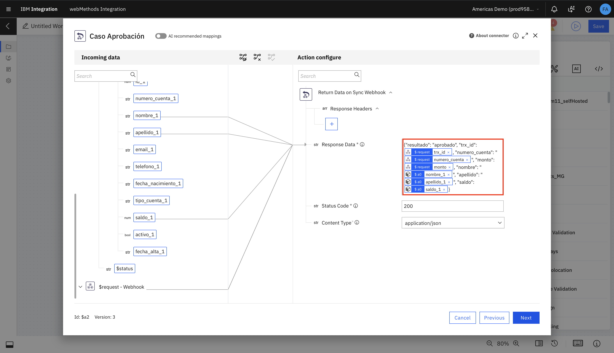
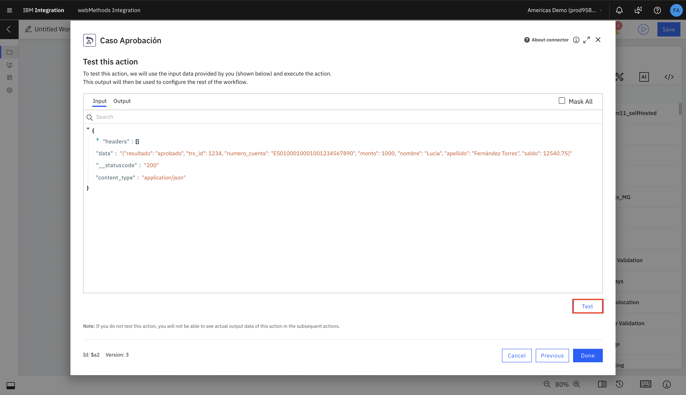
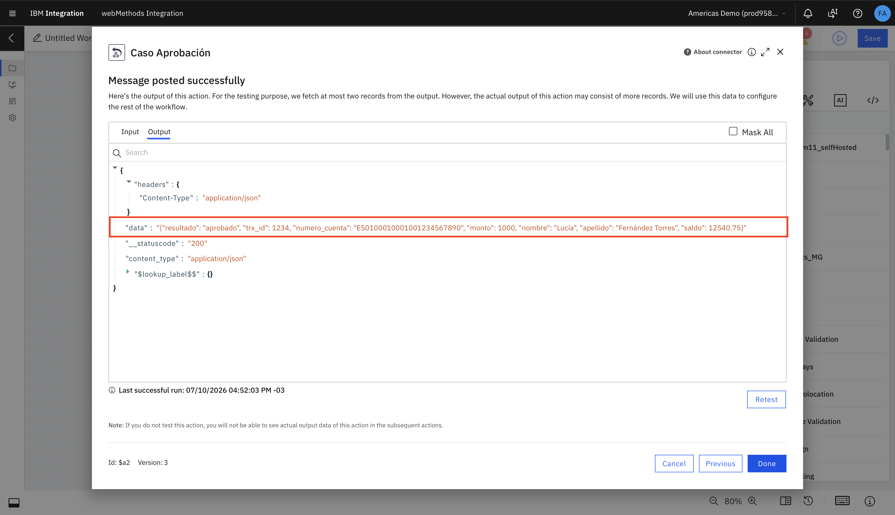
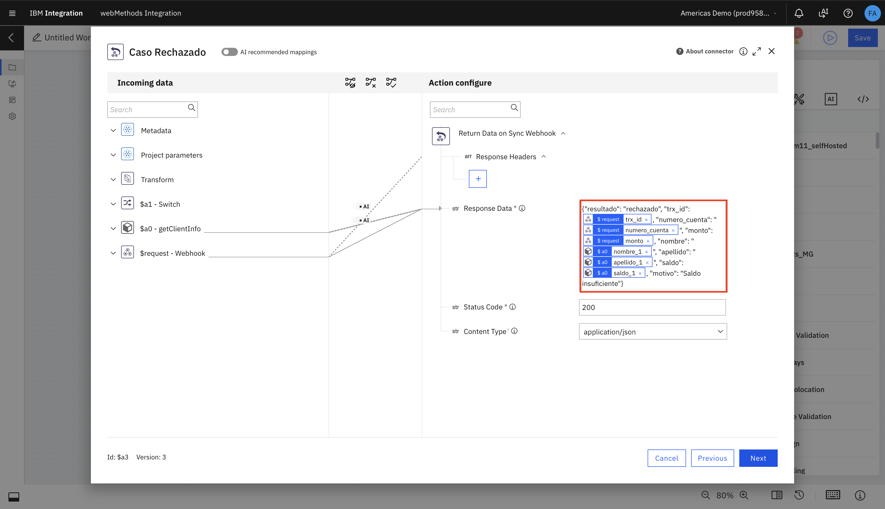
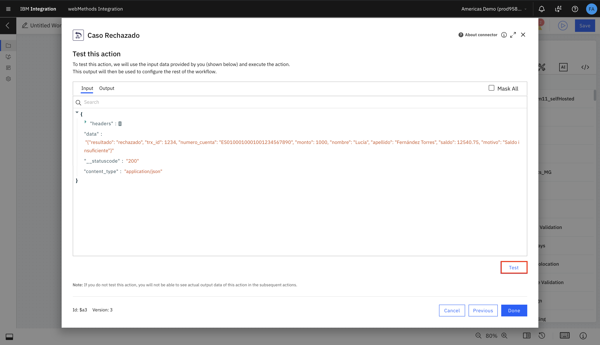
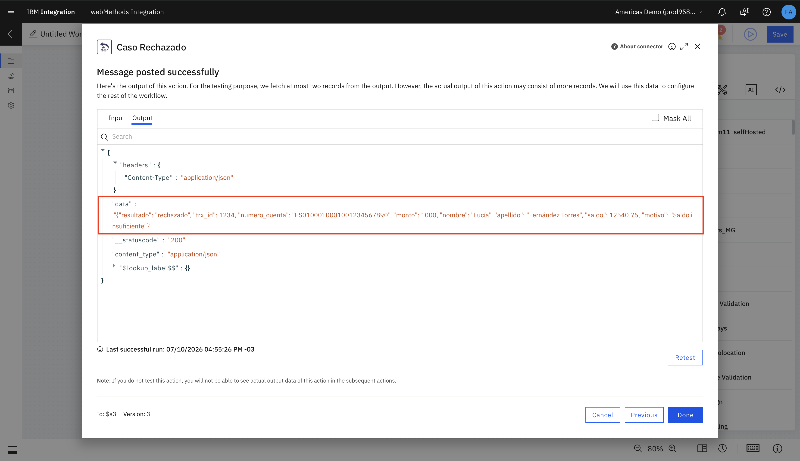

6.1 — Configurar "Caso Aprobación"
Abrí el bloque de respuesta de la primera rama y renombralo a Caso Aprobación.
- Status Code:
200
- Content Type:
application/json
Response Data:
{"resultado": "aprobado", "trx_id": {{$request.body.trx_id}}, "numero_cuenta": "{{$request.body.numero_cuenta}}", "monto": {{$request.body.monto}}, "nombre": "{{$a0.results[0].nombre_1}}", "apellido": "{{$a0.results[0].apellido_1}}", "saldo": {{$a0.results[0].saldo_1}}}
Hacé clic en Next.

Ejecutá el test con Test:

Verificá la respuesta exitosa y hacé clic en Done:

6.2 — Configurar "Caso Rechazado"
Abrí el bloque de respuesta de la segunda rama y renombralo a Caso Rechazado.
- Status Code:
200
- Content Type:
application/json
Response Data (incluye el campo motivo):
{"resultado": "rechazado", "trx_id": {{$request.body.trx_id}}, "numero_cuenta": "{{$request.body.numero_cuenta}}", "monto": {{$request.body.monto}}, "nombre": "{{$a0.results[0].nombre_1}}", "apellido": "{{$a0.results[0].apellido_1}}", "saldo": {{$a0.results[0].saldo_1}}, "motivo": "Saldo insuficiente"}
Hacé clic en Next.

Ejecutá el test con Test:

Verificá el payload de rechazo y hacé clic en Done:

El canvas reflejará la configuración completa de ambos casos: